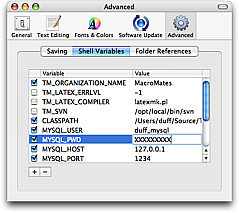
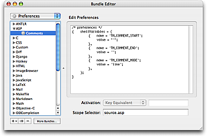

Environment variables are used extensively in TextMate to provide scripts and commands with information.
Here is how to read the value of a variable (named VAR) in different scripting languages:
"$VAR"$ENV{'VAR'}$_ENV['VAR']os.environ['VAR'] (remember to import os first)ENV['VAR']You can use them directly in Snippets, like in bash. Both bash and snippets support an extended form (${VAR}) where it is possible to do replacements in the variable, provide fallback values (if it is unset) etc.
Remember to double-quote variables used in shell scripts, otherwise bash will first expand the variable to its value and then split this according to the input-field-separator characters (read as the IFS variable, defaults to spaces, tabs and newlines). This means if TM_FILENAME is My Document.txt and we execute rm $TM_FILENAME then rm will actually get two arguments, first one being My and the second one being Document.txt.
For info about what can be done with environment variables in bash, see this blog post about the issue or check out the bash man file.
The following variables reflect the users current configuration, which file he has open, where the caret is located in that file, the selection in the project drawer and so on.
A script can read these variables and make decisions accordingly.
Some of the variables are not always present. For example if the current file is untitled, or there is no selection, the corresponding variable will be unset. This is useful for example to make a command work with the selection, but fall back on the current line or word.
Bash has shorthand notation for providing a default value when a variable is not set, for example to fallback on the current word when there is no selection, we would use: "${TM_SELECTED_TEXT:-$TM_CURRENT_WORD}".
TM_BUNDLE_SUPPORT — shell commands which are (indirectly) triggered from a bundle item (which could be a Command, Drag Command, Macro, or Snippet) will have this variable pointing to the Support folder of the bundle that ran the item, if such a folder exists. In addition, $TM_BUNDLE_SUPPORT/bin will be added to the path.
TM_CURRENT_LINE — textual content of the current line.
TM_CURRENT_WORD — the word in which the caret is located.
TM_DIRECTORY — the folder of the current document (may not be set).
TM_FILEPATH — path (including file name) for the current document (may not be set).
TM_LINE_INDEX — the index in the current line which marks the caret’s location. This index is zero-based and takes the utf-8 encoding of the line (e.g. read as TM_CURRENT_LINE) into account. So to split a line into what is to the left and right of the caret you could do:
echo "Left: »${TM_CURRENT_LINE:0:TM_LINE_INDEX}«"
echo "Right: »${TM_CURRENT_LINE:TM_LINE_INDEX}«"
TM_LINE_NUMBER — the carets line position (counting from 1). For example if you need to work with the part of the document above the caret you can set the commands input to “Entire Document” and use the following to cut off the part below and including the current line:
head -n$((TM_LINE_NUMBER-1))
TM_PROJECT_DIRECTORY — the top-level folder in the project drawer (may not be set).
TM_SCOPE — the scope that the caret is inside. See scope selectors for information about scopes.
TM_SELECTED_FILES — space separated list of the files and folders selected in the project drawer (may not be set). The paths are shell-escaped, so to use these, you need to prefix the line with eval (to make the shell re-evaluate the line, after expanding the variable). For example to run the file command on all selected files in the project drawer, the shell command would be:
eval file "$TM_SELECTED_FILES"
It is also possible to convert it to an (bash) array and iterate over this, for example:
eval arr=("$TM_SELECTED_FILES")
for (( i = 0; i < ${#arr[@]}; i++ )); do
file "${arr[$i]}"
done
TM_SELECTED_FILE — full path of the first selected file or folder in the project drawer (may not be set).
TM_SELECTED_TEXT — full content of the selection (may not be set). Note that environment variables have a size limitation of roughly 64 KB, so if the user selects more than that, this variable will not reflect the actual selection (commands that need to work with the selection should generally set this to be the standard input).
TM_SOFT_TABS — this will have the value YES if the user has enabled soft tabs, otherwise it has the value NO. This is useful when a shell command generates an indented result and wants to match the users preferences with respect to tabs versus spaces for the indent.
TM_SUPPORT_PATH — the TextMate application bundle contains a support folder with several items which are used by some of the default commands (for example CocoaDialog, Markdown, the SCM commit window, Textile, tidy, etc.). This variable points to that support folder. Generally you would not need to use the variable directly since $TM_SUPPORT_PATH/bin is added to the path, so using some of the bundled commands can be done without having to specify their full path.
TM_TAB_SIZE — the tab size as shown in the status bar. This is useful when creating commands which need to present the current document in another form (Tidy, convert to HTML or similar) or generate a result which needs to match the tab size of the document. See also TM_SOFT_TABS.
In addition to the dynamic variables, which TextMate provides automatically, it is sometimes useful to provide a list of static variables.
For example you may have templates or snippets that should insert your company name and prefer not to put the value directly in these, or there could be shared commands which need localized settings, for example the SQL bundle has a query command which use variables for username, password and database.
For this reason it is possible to set a default list of environment variables in Preferences → Advanced → Shell Variables.

These variables are given to all shell commands started from TextMate and can also be used in snippets (as can the dynamic variables for that matter).
Some variables are a cross between dynamic and static. For example the Source bundle contains a Toggle Comment command which will toggle the comment for the current line or selection. This command uses three variables to decide what type of comment style the user wants.
A user who works with multiple languages will however need to specify this per language. This can be done by setting the shellVariables array in the bundle preferences and provide the proper scope selector to limit these variables.

This has the advantage of actually being based on the carets location, which for the Toggle Comment command allows us to have it work differently for JavaScript, CSS, HTML and embedded PHP + Ruby, all in the same document.
An example of setting the 3 variables to comment the entire block (instead of line-by-line) with the HTML/SGML/XML comment markers is shown here:
shellVariables = (
{ name = 'TM_COMMENT_START';
value = '<!-- ';
},
{ name = 'TM_COMMENT_END';
value = ' -->';
},
{ name = 'TM_COMMENT_MODE';
value = 'block';
},
);
Sometimes it is useful to have a command customized differently depending on the project. For this reason, it is possible to set variables for individual projects.
The way to do this is currently a little secret but if you deselect everything in the project drawer, then click the info (circled I) button, a panel will appear where you can set variables.
These variables are saved in the project file (*.tmproj) and will exist only for snippets and (shell) commands executed in the context of that project.